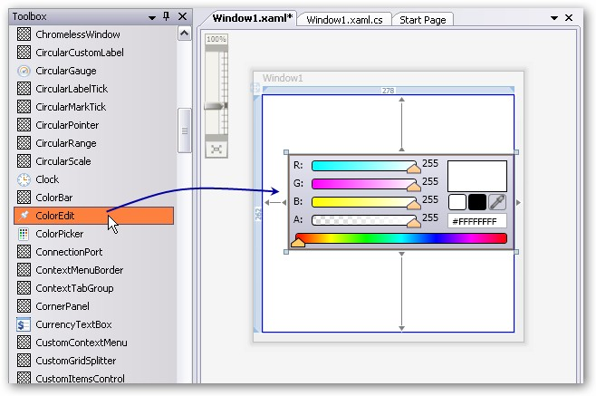
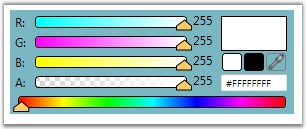

There are two possible ways to create a simple ColorEdit control.
1. Through Designer
To create the ColorEdit control through designer, follow the below steps.
1. Drag a ColorEdit control from the toolbox onto the design area.

Figure 150: ColorEdit control dragged from the Toolbox to the designer
2. Set the properties for ColorEdit in design mode, using the Smart Tag feature.
2. Programmatically
You can create a ColorEdit control either by using XAML code or C# code. Use the following code snippet to create a ColorEdit control.
|
[XAML]
<!-- Adding ColorEdit --> <syncfusion:ColorEdit Name="colorEdit"/ |
|
[C#]
//Creating an instance of ColorEdit control ColorEdit colorEdit = new ColorEdit();
//Adding control to the window this.Content = colorEdit; |

Figure 151: ColorEdit Control